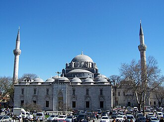

PrésentationتقديمOverview
La mosquée Bayezid II est une mosquée impériale ottomane située sur la place Beyazıt à Istanbul, en Turquie, non loin du Grand bazar et des ruines du forum de Théodose de l'ancienne Constantinople. Elle fut construite par le Sultan ottoman Bayezid II. Il s'agit du second complexe impérial de mosquée érigé à Istanbul après la conquête de Constantinople par les Ottomans.
جامع بايزيد الثاني أحد مساجد السلاطين العثمانيين وهو أحد أكبر مساجد مدينة إسطنبول في تركيا. شُيّد هذا المسجد الكبير، الذي أمر السلطان بايزيد الثاني ببنائه، في الفترة ما بين 1501 إلى 1506م، ويُنسب التصميم إلى المهندس خير الدين. أُعيد بناء قبة المسجد جزئيا بعد زلزال عام 1509م، وتمت عمليات الإصلاح بإشراف المعمار سنان في عام 1574م. يقع المسجد على التل الثالث من مدينة إسطنبول في موقع ساحة ثيودوسيوس بمنطقة إسطنبول القديمة، ويتميز البنيان المعماري الهندسي بأقواس مُدببة وقباب رائعة. وتوجد في المسجد نافورة ثمانية الشكل للوضوء. وتجري حالياً عمليات ترميم للمسجد امتدت حتى عام 2017.
The Bayezid II Mosque is an early 16th-century Ottoman imperial mosque located in Beyazıt Square in Istanbul, Turkey, near the ruins of the Forum of Theodosius of ancient Constantinople.
Bayezid Camii İstanbul'un Beyazıt semtinde Sultan II. Bayezid tarafından yaptırılmış bir cami.
Masjid Bayezid II adalah sebuah masjid peninggalan Kesultanan Utsmaniyah pada awal abad ke-16 yang berada di kawasan Lapangan Beyazıt, distrik Fatih, Provinsi Istanbul, Turki, dekat reruntuhan Forum Theodosius di Konstantinopel kuno. Masjid ini didirikan pada tahun 1506 atas perintah Sultan Bayezid II, dan merupakan kompleks masjid Ottoman terbesar kedua, setelah penaklukan Ottoman atas Istanbul pada tahun 1453.
Die Beyazıt-Moschee, auch Bayezıt-Moschee, ist die älteste noch heute bestehende Sultan-Moschee in Istanbul im gleichnamigen Bezirk. Sie liegt am Beyazıt-Platz vor dem Eingang zum Gelände der Universität Istanbul und wurde unter Sultan Beyazıt II., dem Sohn Mehmed des Eroberers, zwischen 1501 und 1506 errichtet.
La mezquita de Beyazid, también llamada la Mezquita de las Palomas, fue construida entre 1501 y 1506 por el arquitecto Yakup Şah y representa un importante punto de enlace entre las mezquitas de la Anatolia del siglo XV y las que construyó Mimar Sinan. Fue edificada siguiendo el esquema de la iglesia Hagia Sofia: una cúpula central sostenida por cuatro pilares y dos naves laterales más pequeñas, con columnas de granito y jaspe en las que se apoyan los arcos apuntados. En el interior se encuentran numerosas inscripciones de Seyh Hamdullah, el calígrafo más grande del mundo islámico
La moschea di Bayezid II è una moschea ottomana ubicata a piazza Beyazıt ad Istanbul in Turchia, nei pressi delle rovine del Foro di Teodosio appartenente all'antica Costantinopoli.
A Mesquita de Bajazeto é uma mesquita otomana situada no distrito de Fatih, Istambul, Turquia. A mesquita situa-se na área e praça do mesmo nome, junto ao local onde se erguia o Fórum de Teodósio da antiga Constantinopla.
베야지드 모스크(튀르키예어: Bayezid Camii 베야지드 자미[*]) 또는 베야지트 모크스(튀르키예어: Beyazıt Camii 베야지트 자미[*])는 터키 이스탄불 베야지트 광장에 위치한 모스크이다. 고대 콘스탄티노폴리스의 테오도시우스 포룸 근처에 위치하고 있다.
Мече́ть Баези́д — одна из больших мечетей Стамбула, имеет два минарета. Расположена в старой части города на площади Беязыт. Рядом с мечетью находятся ворота Гранд-базара и главные ворота Стамбульского университета.
Moscheea lui Baiazid al II-lea este o moschee din orașul Istanbul, din Turcia. Este una dintre cele mai vechi moschei imperiale din oraș.
Sur la carteعلى الخريطةOn the map
Documents et liensوثائق وروابطDocuments and links
- Wikipédia — Français
- Wikipédia — العربية
- Wikipédia — English
- Wikipédia — Türkçe
- Wikipédia — Bahasa Indonesia
- Wikipédia — اردو
- Wikipédia — Deutsch
- Wikipédia — Español
- Wikipédia — Italiano
- Wikipédia — Português
- Wikipédia — 中文
- Wikipédia — 한국어
- Wikipédia — Русский
- Wikipédia — Română
- Wikidata — Q853064
Données : Wikidata (CC0), mises à jour tous les 3 mois. L'année est la plus ancienne date de construction connue du bâtiment : pour un édifice devenu mosquée plus tard (comme Sainte-Sophie), c'est celle du bâtiment d'origine. Photos : Wikimedia Commons, auteur et licence sur la page de chaque photo.البيانات: ويكي بيانات (CC0)، تُحدَّث كل 3 أشهر. السنة هي أقدم تاريخ معروف لبناء المبنى: فإن صار مسجدًا لاحقًا (مثل آيا صوفيا) فهي سنة المبنى الأصلي. الصور: ويكيميديا كومنز، المؤلف والرخصة في صفحة كل صورة.Data: Wikidata (CC0), updated every 3 months. The year is the earliest known construction date of the building: for a building that became a mosque later (such as Hagia Sophia), it is that of the original building. Photos: Wikimedia Commons, author and licence on each photo's page.
Grandes mosquées du mondeالجوامع الكبرى في العالمGreat mosques of the world →